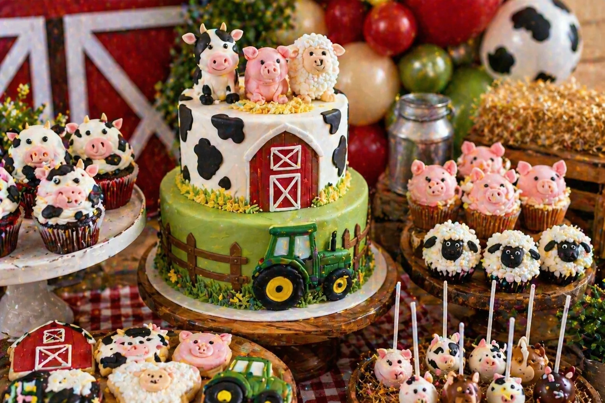
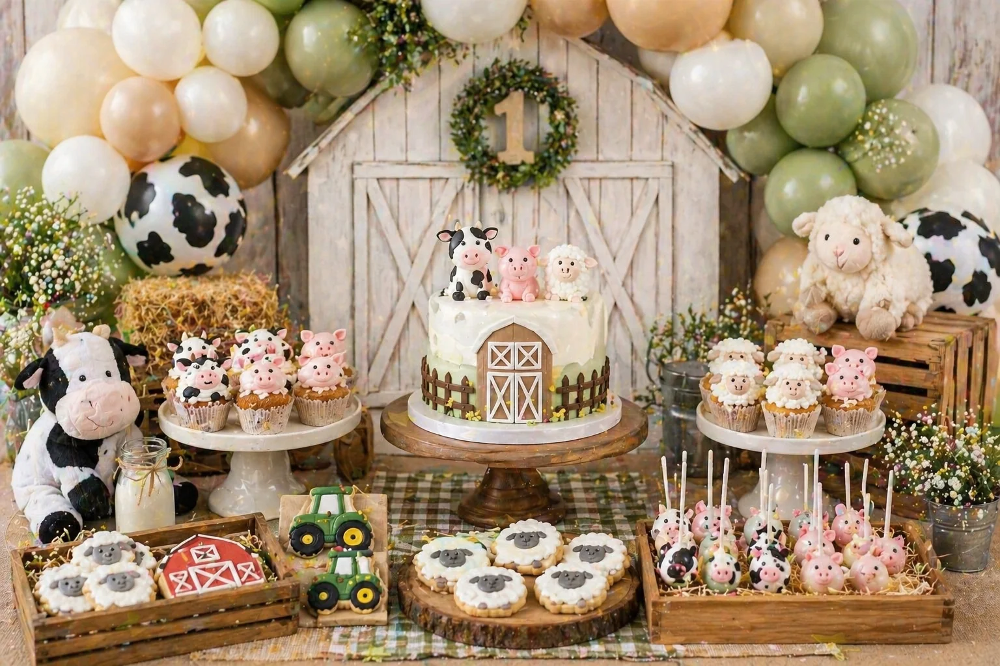

A farm party is a sweet, playful and charming theme for a children's birthday celebration. With barnyard balloon garlands, a farm animal birthday cake, cow and pig cupcakes, tractor cookies and rustic wooden crates, the dessert table can become the centrepiece of the whole party.
At Little Moment Studio, our focus is balloon styling and celebration setups. We do not make cakes or cupcakes ourselves, but we know how important the dessert table is to the overall party look. This guide covers farm party inspiration — colour palettes, balloon ideas, three styling approaches and sweet treat ideas that work beautifully together.
If you would like cupcakes or a cake to complement your balloon display, we are happy to recommend a trusted local cake maker.
Farm Party Colour Palettes
Start with the colour palette before choosing balloons, cake or sweet treats. Farm parties work best with warm, earthy tones — pick three to five colours and repeat them across every element on the table.
Classic Barnyard
Barn red, cream, soft green and straw. Cheerful and instantly recognisable.
Cow Print
Black, white, red and green. Bold graphic pattern with a barnyard feel.
Soft Neutral Farm
Sage, cream, beige and soft brown. Calm, warm and photo-friendly.
Tractor Party
Tractor green, yellow, brown and cream. Perfect for vehicle-loving children.
Idea 1: Classic Barnyard Dessert Table
A classic barnyard dessert table is the most recognisable farm party style. Barn red, cream, green and straw beige create a cheerful, warm farm scene that works well for all ages and photographs beautifully. Rustic props — wooden crates, gingham fabric, hay-style details — do a lot of the styling work even on a simple table.
| Element | Classic Barnyard Idea |
|---|---|
| Balloon garland | Barn red, cream and soft green with cow-print balloon accents |
| Backdrop | Barn door backdrop or wooden fence panels |
| Cake | Farm animal cake or barn cake with cow, pig and sheep toppers |
| Cupcakes | Cow, pig and sheep cupcakes grouped together on a tiered stand |
| Cookies | Tractors, barns, cows and pigs in red, green and cream icing |
| Cake pops | Farm animal pops or straw-coloured cake pops |
| Sweet jars | Red and white sweets, chocolate eggs and milk bottle sweets |
| Stands & props | Wooden crates, rustic stands, gingham runner and hay-style props |
This is the strongest all-round farm party look because the palette is immediately readable and the rustic textures add warmth that more polished themes cannot achieve. The key is keeping the red as an accent rather than the dominant colour — too much red makes the table feel heavy, while barn red balanced with cream and green feels fresh and cheerful.
Balloon tip
For a classic barnyard garland, use barn red, cream and soft green latex balloons as the base with cow-print balloons added as occasional accents. Avoid using too many cow-print balloons — two or three in a full garland is enough for the pattern to read clearly without overwhelming the overall look.
Idea 2: Farm Animal Cake & Cupcake Display

Farm animal cake and cupcake display styled by Little Moment Studio, Sittingbourne — cow, pig and sheep toppers with tractor cookies and rustic wooden stand
A farm animal cake and cupcake display makes the birthday cake the unmistakable centrepiece of the table. Cow, pig and sheep cupcakes grouped around the base of a tiered stand create an instant farm scene — each animal is familiar and recognisable to young children, which makes the display feel engaging as well as beautiful.
| Element | Farm Animal Display Idea |
|---|---|
| Cake | Farm animal cake with cow, pig and sheep fondant toppers |
| Cupcakes | Cow, pig, sheep and chick cupcakes — one animal per cupcake |
| Cookies | Tractor and barn cookies to frame the cake stand |
| Cake pops | Animal face pops or straw-coloured pops on a rustic stand |
| Cake stand | Wooden or rustic tiered stand with gingham lining |
| Balloon garland | Red, cream and green garland arching above the table |
| Props | Small wooden crates and milk bottles on either side of the stand |
The sheep cupcakes are particularly useful because the white piped texture — created with a Wilton 233 grass tip — adds variety to the display without needing extra decoration. Pig cupcakes in blush pink and cow cupcakes in black and white keep the colour story consistent with the barn palette.
For birthday cupcake design ideas, see our birthday cupcake ideas guide.
Idea 3: Soft Neutral Farm First Birthday Table

Soft neutral farm first birthday table — sage, cream and beige with wooden crates, rustic props and animal cupcakes
A soft neutral farm table is a gentler, more premium version of the theme. By swapping barn red for sage green and cream, the table feels warm and rustic without being too bright. It works especially well for first birthdays where the parents want the party to feel styled and photo-friendly rather than bold and primary-coloured.
| Element | Soft Neutral Farm Idea |
|---|---|
| Balloon garland | Sage, cream, beige and ivory with soft green accents |
| Backdrop | Natural wood backdrop, neutral barn scene or soft linen |
| Cake | Farm animal cake with number one topper in cream and sage tones |
| Cupcakes | Sheep, pig and cow cupcakes in neutral buttercream tones |
| Cookies | Tractor and farm animal cookies in cream, sage and beige icing |
| Cake pops | Cream or beige pops with simple animal face details |
| Props | Wooden crates, soft florals in ivory and white, wood slices |
| Stands | Light wood or cream cake stands with natural linen runner |
Styling tip
For a soft neutral farm table, let the textures do the work rather than the colours. Rough wood, wicker, gingham and natural fabric all read as "farm" without needing bold red or bright green. A sage and cream balloon garland with ivory filler balloons creates a beautiful backdrop for this style of table.
What to Include on a Farm Dessert Table
A farm dessert table can be simple or full depending on the size of the party. Start with the cake and cupcakes, then add cookies, cake pops and sweet jars to fill the space. Rustic props — wooden crates, milk bottles and gingham fabric — fill the remaining visual space without adding more food than guests can eat.
| Treat | Farm Party Idea |
|---|---|
| Birthday cake | Barn cake, farm animal cake, tractor cake or cow-print cake |
| Cupcakes | Cow, pig, sheep, chick or tractor cupcakes |
| Cookies | Tractors, barns, cows, pigs, sheep and number cookies |
| Cake pops | Farm animal pops, straw-style pops or milk bottle pops |
| Macarons | Cream, red, sage or beige tones |
| Sweet jars | Red and white sweets, chocolate eggs or milk bottle sweets |
| Brownies | Muddy puddle or chocolate farm-style pieces |
| Mini desserts | Small pots with farm animal toppers |
For practical advice on arranging the table layout, see our guide to how to style a dessert table for a children's party.
Farm Party Balloon Ideas
The balloon display creates most of the visual impact around the dessert table. A garland that frames the barn backdrop or table backdrop is the most effective approach for a farm party — the warm red and green tones of a classic barnyard garland immediately set the scene.
| Theme | Balloon Colours |
|---|---|
| Classic barnyard | Barn red, cream and soft green with cow-print accents |
| Cow-print farm | Black, white and red with cow-print balloon accents |
| Soft neutral farm | Sage, cream, beige and ivory |
| Tractor party | Tractor green, yellow, brown and cream |
| First birthday farm | Sage, cream, beige and soft green |
For a premium result, use cow-print balloons sparingly — they add character but can overwhelm the display if overused. Solid cream and red balloons as the base with two or three cow-print accents is a much more considered look than a full garland of patterned balloons.
See our balloon garlands in Kent page and birthday balloon styling page for packages and availability.
Matching Balloons, Cake & Cupcakes
To make the table feel coordinated, repeat the same colours across the balloons, cake and sweet treats. The textures matter as much as the colours on a farm table — gingham, wood and natural materials all reinforce the theme without needing extra detail on the food.
| Balloon Palette | Cake & Cupcake Idea |
|---|---|
| Red, cream, green | Barn cake, animal cupcakes, tractor and barn cookies |
| Black, white, red | Cow-print cake, cow cupcakes, milk bottle props |
| Sage, cream, beige | Neutral farm cake, sheep cupcakes, tractor cookies in sage icing |
| Green, yellow, brown | Tractor cake, wheel cookies, grass-piped cupcakes |
| Sage, cream, ivory | First birthday farm cake with number one topper, pig and sheep cupcakes |
Your Questions Answered
What colours work best for a farm party?
Barn red, cream, white, soft green and straw beige are the classic barnyard palette and work well for most ages. For a more relaxed, neutral feel, sage, ivory, beige and soft brown create a warm rustic look that photographs beautifully. Cow-print balloons paired with red, white and black are a bold option for a more graphic farm table. For a first birthday, sage, cream and beige keep the table soft and gentle.
What balloons should I use for a farm party?
A red, cream and soft green garland is the most recognisable barnyard balloon choice. Cow-print balloons added as accents — two or three in a full garland — give the display a fun farm identity without overpowering the solid colours. For a soft neutral or first birthday farm theme, sage, cream and beige balloons with ivory filler feel warm and beautifully styled. For a tractor party, tractor green, yellow and cream work well alongside wooden props.
What cupcakes work well for a farm party?
Cow, pig and sheep cupcakes are the most popular farm party option and look charming grouped together. Each animal can be piped or finished with a simple fondant face. The sheep cupcakes in particular add lovely texture to the display using a grass-effect piping tip. For tractor parties, tractor topper cupcakes with green buttercream grass are a strong alternative. See our birthday cupcake ideas guide for more inspiration.
What should I include on a farm party dessert table?
A strong farm party dessert table typically includes a farm animal or barn birthday cake as the centrepiece, twelve to twenty-four animal cupcakes, tractor and barn cookies, farm animal cake pops, rustic sweet jars and wooden crate props. A red, cream and green balloon garland framing the backdrop creates most of the visual impact. Gingham fabric, wood slices and rustic stands reinforce the farm feel without cluttering the display.
Can a farm party work for a first birthday?
Yes — a farm theme is especially popular for first birthdays because the familiar animal characters are engaging for very young children. For a first birthday farm table, use a softer palette: sage, cream, beige and ivory instead of bright barn red. A farm animal cake with a number one topper, sheep and pig cupcakes, and tractor cookies keep the table charming without being overpowering. See our first birthday balloon ideas guide for more.
Whether you choose the classic barnyard approach, a coordinated animal cake and cupcake display, or the softer neutral palette for a first birthday, the key to a beautiful farm party table is consistency. When the balloons, cake, cupcakes, cookies and props all share the same warm colour language — red and cream, or sage and beige — the whole setup feels designed rather than assembled.
For more children's birthday party inspiration, see our guides to dinosaur party balloon and dessert table ideas, unicorn party balloon and dessert table ideas and space party balloon and dessert table ideas.
Planning a Farm Party in Sittingbourne or Kent?
Little Moment Studio creates beautiful balloon displays and celebration setups for children's birthdays across Sittingbourne and Kent. We can also recommend a trusted local cake maker to complete your farm party dessert table.